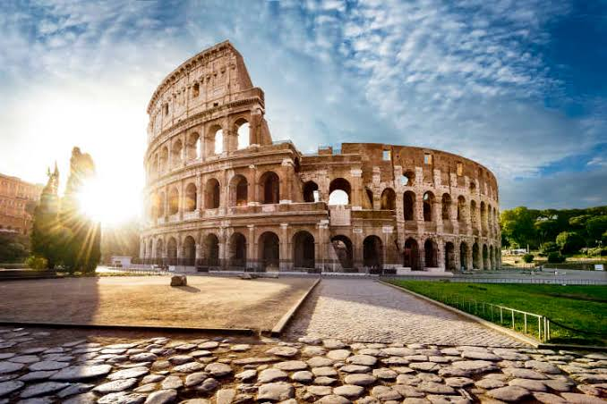

Sakhile Baloyi
Italy
 The history of Italy covers the Ancient Period, the Middle Ages and the modern era. Since
classical
antiquity, ancient Phoenicians, Greeks, Etruscans, and Celts have inhabited the Italian
Peninsula, with
various Italic peoples dispersed throughout Italy alongside other ancient Italian tribes and
Greek,
Carthaginian, and Phoenician colonies.[1][2] In antiquity, Italy was the homeland of the Romans
and the
metropole of the Roman Empire.[3][4] Rome was founded as a Kingdom in 753 BC and became a
Republic in
509 BC, when the monarchy was overthrown in favor of a government of the Senate and the People.
The
Roman Republic then unified Italy at the expense of the Etruscans, Celts, and Greeks of the
peninsula.
Rome led the federation of the Italic peoples, and later dominated Western Europe, Northern
Africa, and
the Near East.
The history of Italy covers the Ancient Period, the Middle Ages and the modern era. Since
classical
antiquity, ancient Phoenicians, Greeks, Etruscans, and Celts have inhabited the Italian
Peninsula, with
various Italic peoples dispersed throughout Italy alongside other ancient Italian tribes and
Greek,
Carthaginian, and Phoenician colonies.[1][2] In antiquity, Italy was the homeland of the Romans
and the
metropole of the Roman Empire.[3][4] Rome was founded as a Kingdom in 753 BC and became a
Republic in
509 BC, when the monarchy was overthrown in favor of a government of the Senate and the People.
The
Roman Republic then unified Italy at the expense of the Etruscans, Celts, and Greeks of the
peninsula.
Rome led the federation of the Italic peoples, and later dominated Western Europe, Northern
Africa, and
the Near East.
Foreign Languages
The laungages and places presented under this table are originaly from italy
Colosseum
 Colosseum, also called Flavian Amphitheatre, giant amphitheatre built in Rome under the Flavian emperors. Construction of the Colosseum was begun sometime between 70 and 72 CE during the reign of Vespasian. It is located just east of the Palatine Hill, on the grounds of what was Nero’s Golden House. The artificial lake that was the centrepiece of that palace complex was drained, and the Colosseum was sited there, a decision that was as much symbolic as it was practical. Vespasian, whose path to the throne had relatively humble beginnings, chose to replace the tyrannical emperor’s private lake with a public amphitheatre that could host tens of thousands of Romans.Roman Forum
 The Roman Forum, also known by its Latin name Forum Romanum, is a rectangular forum
surrounded by
the ruins of several important ancient government buildings at the center of the city of
Rome.
Citizens of the ancient city referred to this space, originally a marketplace, as the
Forum Magnum,
or simply the Forum.
The Roman Forum, also known by its Latin name Forum Romanum, is a rectangular forum
surrounded by
the ruins of several important ancient government buildings at the center of the city of
Rome.
Citizens of the ancient city referred to this space, originally a marketplace, as the
Forum Magnum,
or simply the Forum.